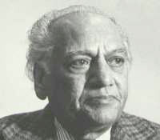
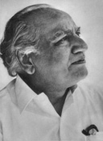
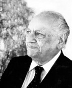

FAIZ AHMAD FAIZ (1911-1984) Author of many books of Urdu poetry, he was also editor of the English-language newspaper The Pakistan Times. Later, in Beirut, he edited Lotus, the journal of the Afro-Asian Writers’ Association. He was twice a Nobel Prize nominee and was awarded the Lenin Peace Prize in 1962.
|
|  |  |  |